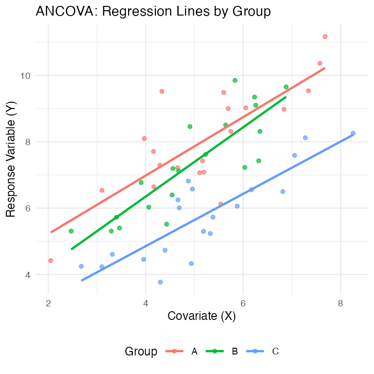
Covariates
Covered last time — linear mixed models:
(1|group) notationCovered in week 10 — generalized linear models:
Note
✅ Where today fits
Week 10 changed the distribution. Week 11 changed the error structure. Today changes neither — it goes back to the ordinary linear model and asks what happens when the predictors are one categorical and one continuous at the same time.
This is the last of the general linear models, and the one that links the ANOVA half of the course to the regression half.
Overview
Introduction to ANCOVA
The ANCOVA workflow in R
When to use ANCOVA
Building the ANCOVA model in R
Assumptions of ANCOVA
Interpreting results & “Adjusted Means”
Handling violations (heterogeneous slopes)
ANCOVA = Analysis of COVAriance — regression and ANOVA in one model. You use it when you have:
Two things it is for:

The covariate (e.g., body size, initial temperature) explains some of the “noise” (residual error) in the response variable.
By “removing” this variation, we reduce the residual error, making it easier to detect the true effect of our categorical factor.
This results in a more powerful test of treatment effects.
Imagine your treatment groups happen to differ in their average covariate value (e.g., Group A was tested in a warmer room than Group B).
ANCOVA allows you to separate the treatment effect from the covariate effect.
Back to the Arctic grayling from week 5 — the same fish, a new question.
Lake I8 fish weigh more than lake I3 fish. But I8 fish are also longer (mean 364 mm vs 266 mm).
Is there a lake effect on mass at all, or are I8 fish simply bigger?
You cannot answer that by comparing mean masses. The groups differ in the very thing that drives the response.
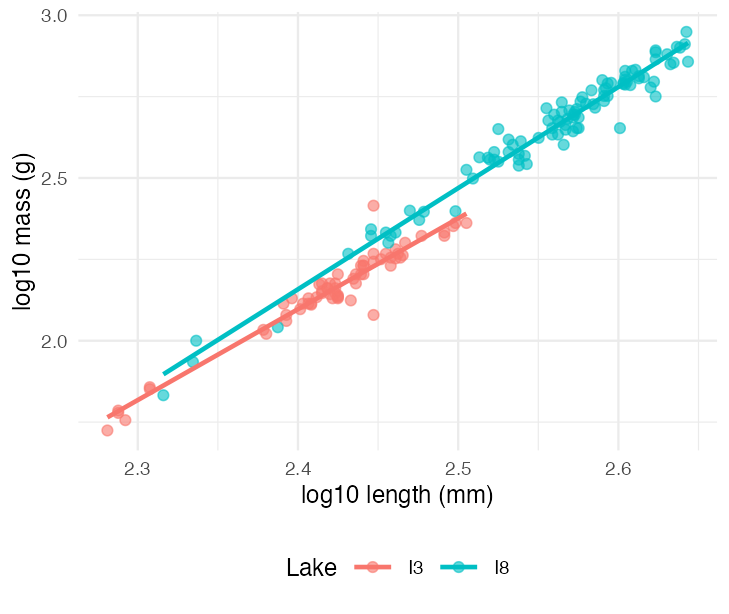
Problem 1 — confounding. The groups differ in the covariate, so a raw comparison of means confuses the treatment with the covariate. This is the grayling problem, and the classic cricket problem (two species measured at different temperatures).
Problem 2 — noise. Even when the groups are balanced on the covariate, the covariate still soaks up residual variation. Removing it shrinks the error term and makes the test of the factor more powerful. This is the fruitfly problem in Part 4.
Important
ANCOVA does both with one model
\[y \sim \underbrace{x}_{\text{covariate}} + \underbrace{A}_{\text{factor}}\]
It compares groups at a common value of the covariate — the “level playing field” comparison — instead of wherever each group happened to sit.
Warning
⚠️ One rule before you start
The covariate must be measured independently of the treatment, and must not be affected by it. Adjusting for something the treatment caused removes the very effect you are trying to measure.
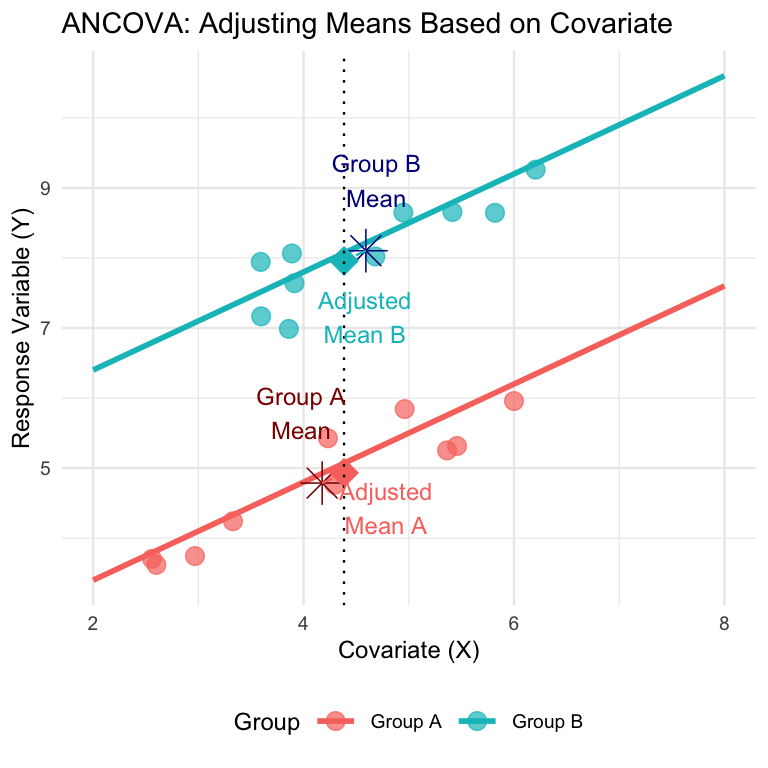
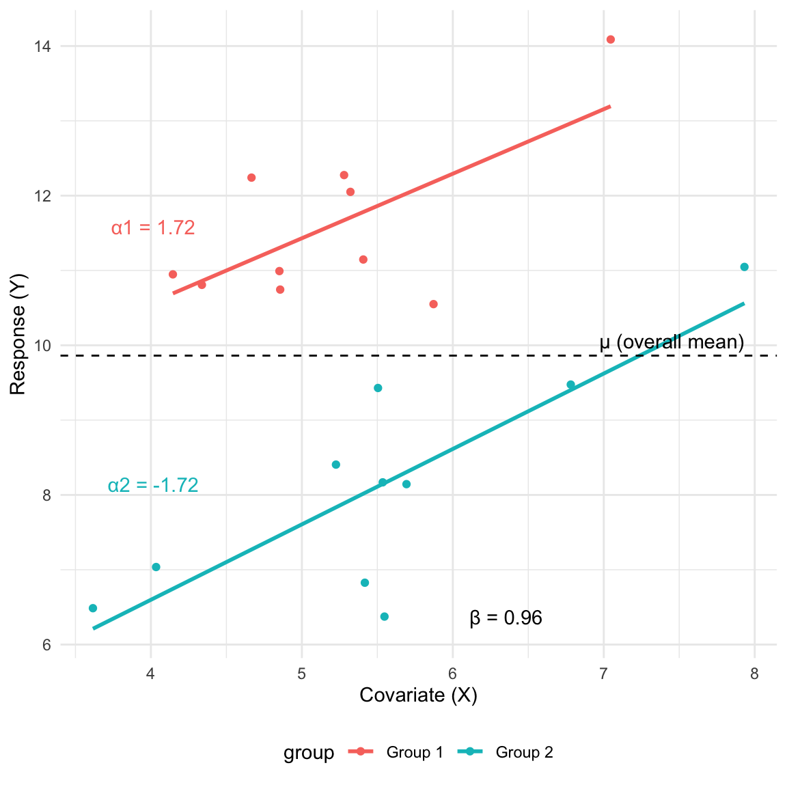
lm(y ~ predictor).
model_reg <- lm(y ~ x, data = mydata)model_aov <- lm(y ~ A, data = mydata)model_ancova <- lm(y ~ A + x, data = mydata)model_int <- lm(y ~ A * x, data = mydata)lm(y ~ A + x + A:x, data = mydata)A:x term tests if the slopes are different.Step 1: Test for Homogeneity of Slopes - Always Start Here
Step 2: Examine the Interaction Term
model_int and find the p-value for interaction term (A:x).y ~ A + x) inappropriate**Step 3: Run the ANCOVA (Additive Model)
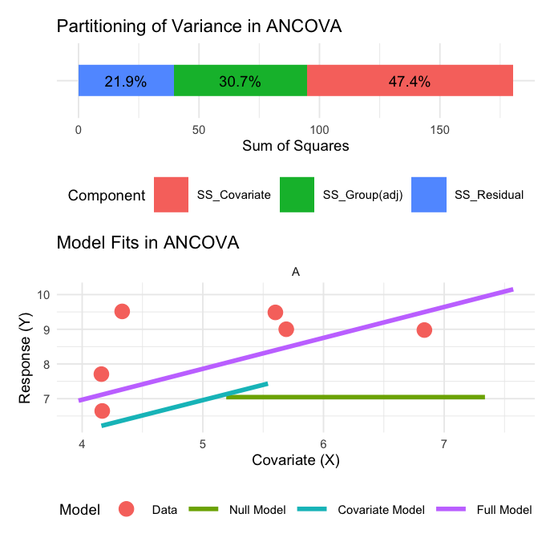
The ANOVA table for a single-factor ANCOVA has these components:
# Create a tibble with ANOVA table information
anova_table <- tibble(
Source = c("Factor A (adjusted)", "Covariate", "Residual", "Total"),
df = c("(p-1)", "1", "n-p-1", "n-1"),
`Sum of Squares` = c("SS_A(adj)", "SS_Covariate", "SS_Residual", "SS_Total"),
`Mean Square` = c(
"MS_A(adj) = SS_A(adj)/(p-1)",
"MS_Covariate = SS_Covariate/1",
"MS_Residual = SS_Residual/(n-p-1)",
""
),
`F-ratio` = c("MS_A(adj)/MS_Residual", "MS_Covariate/MS_Residual", "", ""),
`Expected MS` = c("σ² + n∑α²/(p-1)", "σ² + β²∑(X-X̄)²", "σ²", "")
)
# Create
anova_table
## # A tibble: 4 × 6
## Source df `Sum of Squares` `Mean Square` `F-ratio` `Expected MS`
## <chr> <chr> <chr> <chr> <chr> <chr>
## 1 Factor A (adjust… (p-1) SS_A(adj) "MS_A(adj) =… "MS_A(ad… "σ² + n∑α²/(…
## 2 Covariate 1 SS_Covariate "MS_Covariat… "MS_Cova… "σ² + β²∑(X-…
## 3 Residual n-p-1 SS_Residual "MS_Residual… "" "σ²"
## 4 Total n-1 SS_Total "" "" ""\[H_0: \beta_1 = \beta_2 = ... = \beta_p\]
Are the regression slopes the same for all groups?
Test with the A:x interaction term in lm(y ~ A * x).
Important
This one is an assumption check, not a result. You want to fail to reject it before going any further.
\[H_0: \alpha_1 = \alpha_2 = \dots = \alpha_p = 0\]
Are the adjusted group means equal?
\[F = \frac{MS_{A(adj)}}{MS_{residual}}\]
the A term in lm(y ~ x + A).
\[H_0: \beta = 0\]
Does the covariate relate to the response at all?
\[F = \frac{MS_{covariate}}{MS_{residual}}\]
the x term in lm(y ~ x + A).
Parallel vs. Non-Parallel Slopes
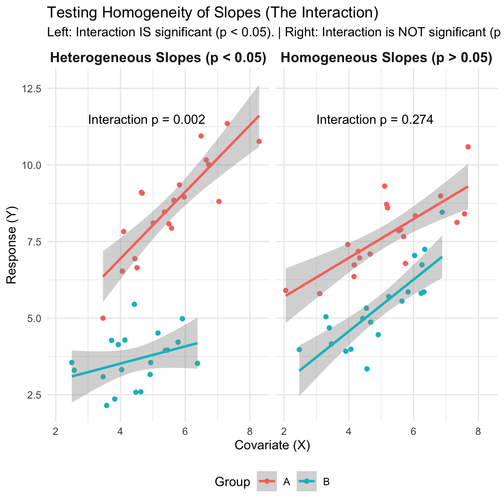
ANCOVA on Longevity of Male Fruitflies
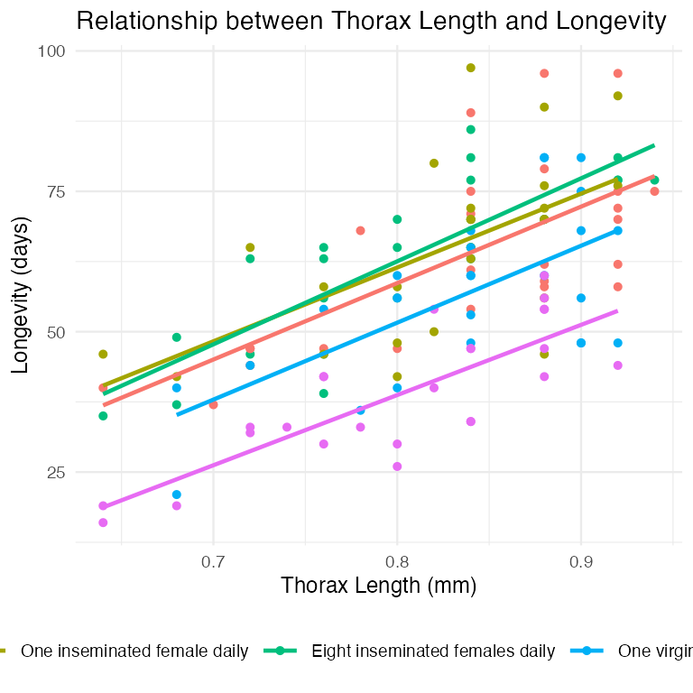
homo_slopes_model <- lm(LONGEV ~ THORAX * treatment,
data = partridge)
Anova(homo_slopes_model, type = "III")
## Anova Table (Type III tests)
##
## Response: LONGEV
## Sum Sq Df F value Pr(>F)
## (Intercept) 2963.8 1 26.0142 0.000001349 ***
## THORAX 12805.8 1 112.3988 < 0.00000000000000022 ***
## treatment 36.9 4 0.0810 0.9881
## THORAX:treatment 42.5 4 0.0933 0.9844
## Residuals 13102.1 115
## ---
## Signif. codes: 0 '***' 0.001 '**' 0.01 '*' 0.05 '.' 0.1 ' ' 1The interaction THORAX:treatment has p = 0.984 — about as far from significant as it gets.
The five treatment groups share a common slope: body size buys the same amount of extra life in every group.
Note
✅ Proceed to Step 3. Drop the interaction and fit the additive model.
# Step 3: Fit the ANCOVA model (additive model)
ancova_model <- lm(LONGEV ~ THORAX + treatment, data = partridge)
# View the final ANCOVA table
Anova(ancova_model, type = "III")
## Anova Table (Type III tests)
##
## Response: LONGEV
## Sum Sq Df F value Pr(>F)
## (Intercept) 3069.7 1 27.791 0.0000006122893158 ***
## THORAX 13168.9 1 119.219 < 0.00000000000000022 ***
## treatment 9611.5 4 21.753 0.0000000000001719 ***
## Residuals 13144.7 119
## ---
## Signif. codes: 0 '***' 0.001 '**' 0.01 '*' 0.05 '.' 0.1 ' ' 1Run the same question without the covariate, and compare:
# one-way ANOVA, covariate ignored
Anova(lm(LONGEV ~ treatment, data = partridge),
type = 2)
## Anova Table (Type II tests)
##
## Response: LONGEV
## Sum Sq Df F value Pr(>F)
## treatment 11939 4 13.612 0.000000003516 ***
## Residuals 26314 120
## ---
## Signif. codes: 0 '***' 0.001 '**' 0.01 '*' 0.05 '.' 0.1 ' ' 1# ANCOVA, thorax length included
Anova(lm(LONGEV ~ THORAX + treatment, data = partridge),
type = 2)
## Anova Table (Type II tests)
##
## Response: LONGEV
## Sum Sq Df F value Pr(>F)
## THORAX 13168.9 1 119.219 < 0.00000000000000022 ***
## treatment 9611.5 4 21.753 0.0000000000001719 ***
## Residuals 13144.7 119
## ---
## Signif. codes: 0 '***' 0.001 '**' 0.01 '*' 0.05 '.' 0.1 ' ' 1| one-way ANOVA | ANCOVA | |
|---|---|---|
| residual SS | 26,314 | 13,145 |
| residual df | 120 | 119 |
| treatment F | 13.61 | 21.75 |
Important
Thorax length absorbed half the residual variation.
One degree of freedom spent on the covariate cut the error term from 26,314 to 13,145, and the test of treatment got 60% bigger (F 13.6 → 21.8) — on identical data and an identical question.
That is the power argument, and it is why you measure a covariate even when your groups are perfectly balanced on it.
Here the treatment effect was significant either way. On a smaller or noisier dataset, that difference is the difference between finding the effect and missing it.
Use emmeans package to get the adjusted means / perform pairwise comparisons
The “estimated marginal mean” (or adjusted mean)
predicted longevity for each group, assuming an average thorax length
This is the “level playing field” comparison.
# Get adjusted means using emmeans
library(emmeans)
adjusted_means <- emmeans(ancova_model, "treatment")
adjusted_means
## treatment emmean SE df lower.CL upper.CL
## No females 61.5 2.11 119 57.3 65.7
## One inseminated female daily 64.2 2.10 119 60.0 68.3
## Eight inseminated females daily 65.4 2.11 119 61.3 69.6
## One virgin female daily 54.5 2.11 119 50.3 58.7
## Eight virgin females daily 41.6 2.12 119 37.4 45.8
##
## Confidence level used: 0.95pairs(adjusted_means, adjust = "tukey")
## contrast estimate SE
## No females - One inseminated female daily -2.65 2.98
## No females - Eight inseminated females daily -3.93 3.00
## No females - One virgin female daily 7.02 2.97
## No females - Eight virgin females daily 19.95 3.01
## One inseminated female daily - Eight inseminated females daily -1.28 2.98
## One inseminated female daily - One virgin female daily 9.67 2.98
## One inseminated female daily - Eight virgin females daily 22.60 2.99
## Eight inseminated females daily - One virgin female daily 10.95 3.00
## Eight inseminated females daily - Eight virgin females daily 23.88 2.97
## One virgin female daily - Eight virgin females daily 12.93 3.01
## df t.ratio p.value
## 119 -0.891 0.8996
## 119 -1.311 0.6849
## 119 2.361 0.1336
## 119 6.636 <0.0001
## 119 -0.428 0.9929
## 119 3.249 0.0129
## 119 7.560 <0.0001
## 119 3.650 0.0035
## 119 8.031 <0.0001
## 119 4.298 0.0003
##
## P value adjustment: tukey method for comparing a family of 5 estimatesSix of the ten are significant. The four that are not:
Every group that actually mated differs from the groups that did not, except the single-virgin group — the mildest treatment.
## treatment emmean SE df lower.CL upper.CL .group
## Eight virgin females daily 41.6 2.12 119 37.4 45.8 a
## One virgin female daily 54.5 2.11 119 50.3 58.7 b
## No females 61.5 2.11 119 57.3 65.7 bc
## One inseminated female daily 64.2 2.10 119 60.0 68.3 c
## Eight inseminated females daily 65.4 2.11 119 61.3 69.6 c
##
## Confidence level used: 0.95
## P value adjustment: tukey method for comparing a family of 5 estimates
## significance level used: alpha = 0.05
## NOTE: If two or more means share the same grouping symbol,
## then we cannot show them to be different.
## But we also did not show them to be the same.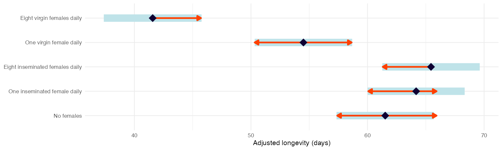
Groups sharing a letter are not distinguishable. The red arrows say the same thing — overlapping arrows mean no significant difference.
Important
Read the pattern, not the ranking
The three non-mating groups are one block. One virgin female pulls longevity down a little; eight pulls it down a lot.
The dose that matters is matings, not company.
Visualization Options for ANCOVA
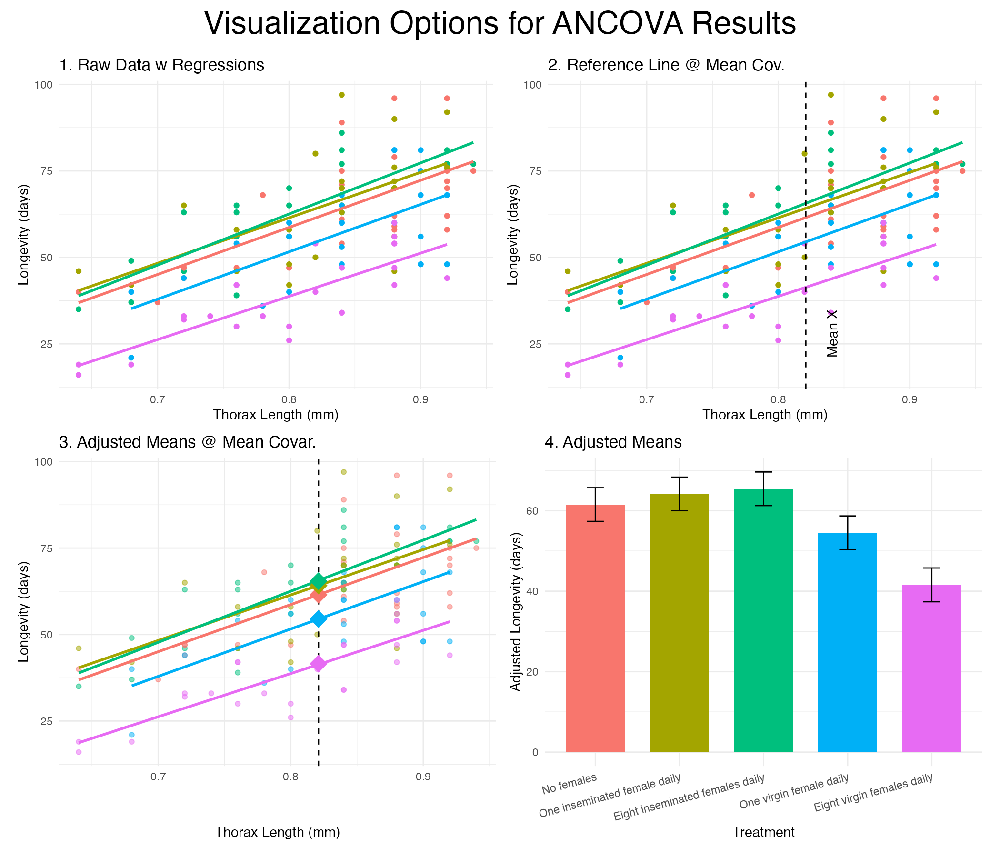
Back to the grayling. Fit the interaction model first, as always:
g_int <- lm(log_mass ~ log_len * lake, data = g_df)
Anova(g_int, type = 3)
## Anova Table (Type III tests)
##
## Response: log_mass
## Sum Sq Df F value Pr(>F)
## (Intercept) 1.8929 1 1337.5062 < 0.00000000000000022 ***
## log_len 4.0602 1 2868.9446 < 0.00000000000000022 ***
## lake 0.0094 1 6.6452 0.010833 *
## log_len:lake 0.0117 1 8.2518 0.004617 **
## Residuals 0.2293 162
## ---
## Signif. codes: 0 '***' 0.001 '**' 0.01 '*' 0.05 '.' 0.1 ' ' 1The interaction is significant (p = 0.0046). The two lakes do not share a slope.
Important
Stop. Do not fit the additive model.
log_mass ~ log_len + lake would force one common slope through two populations that do not have one, and then report a single “lake effect” that is true at no particular length.
There is no such thing as the difference between the lakes here. The difference depends on how big the fish is.
Note
📖 This is not a failure
A significant interaction is usually the more interesting result. It says the groups differ in how the response scales, not merely in where it sits.
emtrends()emtrends(g_int, "lake", var = "log_len")
## lake log_len.trend SE df lower.CL upper.CL
## I3 2.79 0.0943 162 2.61 2.98
## I8 3.11 0.0569 162 3.00 3.22
##
## Confidence level used: 0.95
pairs(emtrends(g_int, "lake", var = "log_len"))
## contrast estimate SE df t.ratio p.value
## I3 - I8 -0.316 0.11 162 -2.873 0.0046emtrends() is emmeans() for slopes. It gives one slope per group, with a standard error, and pairs() tests whether they differ.
On log-log axes the slope is the allometric exponent: mass ∝ lengthb.
Important
The biology is in the exponent
That is a condition difference between the lakes, and an additive ANCOVA would have hidden it entirely.
With non-parallel lines, the gap between groups changes along the covariate. So ask for the contrast at specific covariate values:
lens <- log10(c(200, 250, 300))
pairs(emmeans(g_int, ~ lake | log_len,
at = list(log_len = lens)))
## log_len = 2.30:
## contrast estimate SE df t.ratio p.value
## I3 - I8 -0.0299 0.01940 162 -1.540 0.1256
##
## log_len = 2.40:
## contrast estimate SE df t.ratio p.value
## I3 - I8 -0.0605 0.01110 162 -5.479 <0.0001
##
## log_len = 2.48:
## contrast estimate SE df t.ratio p.value
## I3 - I8 -0.0856 0.00914 162 -9.370 <0.0001| Length | I3 − I8 (log mass) | p |
|---|---|---|
| 200 mm | −0.030 | 0.13 |
| 250 mm | −0.061 | <0.0001 |
| 300 mm | −0.107 | <0.0001 |
At 200 mm the two lakes are indistinguishable. The gap opens as the fish get longer, and by 300 mm an I3 grayling is about 20% lighter than an I8 grayling of the same length.
Warning
⚠️ johnson_neyman = TRUE does not work here
The Johnson–Neyman procedure needs a continuous moderator. interactions::sim_slopes() will warn “Johnson-Neyman intervals are not available for factor predictors or moderators” and give you nothing. With a categorical factor, the contrast-at-covariate-values above is the right tool.
When the interaction is significant:
emtrends() for a slope per group, with pairs() to test them.emmeans(~ A | x, at = ...) — to say where along the covariate the groups separate.Warning
⚠️ Mind the covariate ranges
I3 fish run 191–320 mm; I8 fish run 207–440 mm. The lines can only be compared where both groups have data.
Reporting a lake difference at 400 mm would mean extrapolating the I3 line past every I3 fish ever measured. ANCOVA will do that arithmetic without complaint. You have to be the one who refuses.
Note
This caution applies to the additive model too — an “adjusted mean” at \(\bar{x}\) is an extrapolation for any group whose data does not reach \(\bar{x}\).
| # | Assumption | How you check it |
|---|---|---|
| 1 | Independence | design, not a test |
| 2 | Normal residuals | Q-Q plot |
| 3 | Equal variances | residuals vs. fitted |
| 4 | Linearity of Y on X within each group | scatterplot |
| 5 | Homogeneity of slopes | the A:x interaction |
Important
#5 is the one that is special to ANCOVA, and the only one you test before fitting the model you will report. The other four are the ordinary linear-model assumptions you have been checking since week 7.
Warning
⚠️ And one that is not on the list
The covariate must be independent of the treatment. No test will catch a violation — only knowing how the data were collected will.
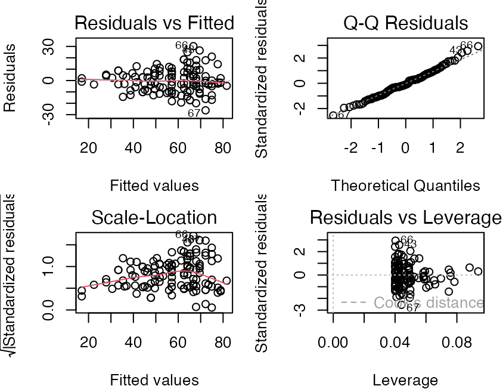
Check assumptions 2 and 3 on the final model — the additive one, if the slopes let you fit it.
Note
Conclusion: the assumptions are met, so the ANCOVA table on the previous slides can be reported as it stands.
When the assumptions are badly violated — not marginally:
lm(rank(y) ~ rank(x) + A)Tip
🖐 Run it as a sensitivity check. If the robust version agrees with the parametric one, report the parametric one and say you checked.
Both vanishingly small — the parametric result stands.
Scientific Writing Example
Here’s how you might write up ANCOVA results for publication:
“We analyzed the effects of mating opportunity on male fruitfly longevity using analysis of covariance (ANCOVA), with thorax length as a covariate. Before conducting the main analysis, we tested the homogeneity-of-slopes assumption and found no significant treatment × thorax length interaction (F₄,₁₁₅ = 0.09, P = 0.98), indicating that the effect of body size on longevity was consistent across treatments.
The ANCOVA revealed significant effects of both treatment (F₄,₁₁₉ = 21.75, P < 0.001) and thorax length (F₁,₁₁₉ = 119.22, P < 0.001) on longevity. Thorax length was positively associated with longevity.
After adjusting for body size, longevity declined with the number of virgin females a male was housed with (adjusted mean ± SE: 54.5 ± 2.11 days for one virgin female and 41.6 ± 2.12 days for eight, versus 61.5 ± 2.11 days for males housed alone). Males housed with inseminated females — which do not mate — did not differ from males housed alone (64.2 ± 2.10 and 65.4 ± 2.11 days; Tukey P = 0.90 and P = 0.68). Six of the ten pairwise comparisons were significant at P < 0.05; the four that were not were the three comparisons among the non-mating groups and the no-females vs. one-virgin-female comparison (P = 0.13).”
Important
The control that makes the experiment work
Newly inseminated females will not mate. Males housed with them get the presence of females without the mating.
Those groups isolate the cost of mating itself from the cost of simply having company — and they show no reduction in longevity at all (65.4 and 64.2 days, against 61.5 for males housed alone).
Note
📖 What this buys the write-up
Without those two groups you could only say “males near females die younger,” which has at least three explanations. With them, the conclusion narrows to one.
Design, not statistics, is what rules out the alternatives. ANCOVA just made the comparison fair on body size.
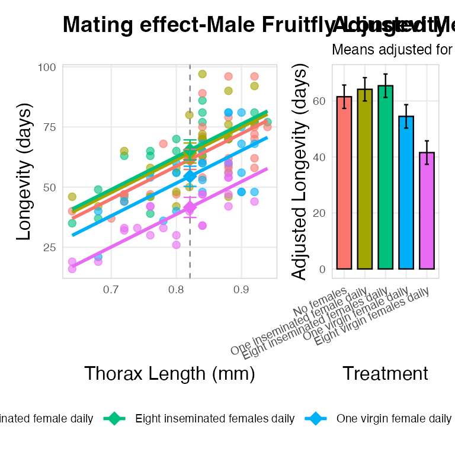
What it is for
The workflow
lm(y ~ A * x)lm(y ~ x + A), and report adjusted meansInterpretation
car::Anova(model, type = "III") for the tableemmeans() for adjusted means and pairwise comparisonsemtrends() for slopes, when the interaction is the resultThe five assumptions
Important
And the one no test will find: the covariate must not be affected by the treatment.
Note
📖 On the datasets
The fruitfly data are Partridge & Farquhar’s, reproduced in Quinn & Keough Box 12-1. The Arctic grayling are from the Arctic LTER — the same lakes you met in week 5.
The textbook PDFs are on Canvas.
Tip
🖐 The homework crickets
Walker’s (1962) cricket data is Homework 10. It is the same shape of question as the grayling — two groups, one covariate — and you decide for yourself whether the slopes let you fit an additive model.